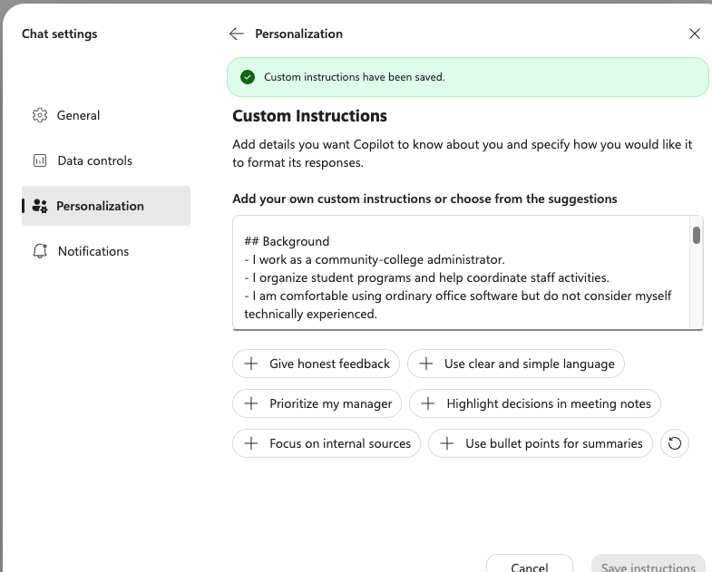
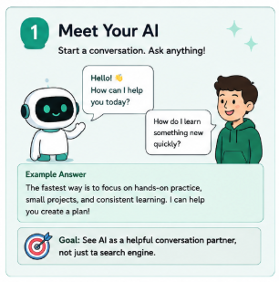

Beginner Workshop - Microsoft Copilot
Build Your First Personalized Copilot
Use Custom Instructions to make Copilot more useful for you.
Copilot can give more relevant responses when you provide stable background information and clear response preferences. This tutorial shows you how to create one concise set of personalization instructions, add it to Copilot, test it, and improve it over time.
- Estimated time: 25-35 minutes
- Uses Copilot Custom Instructions
- No coding required
- One instruction block to maintain
What this tutorial helps you build
In this tutorial, you create a practical personalized assistant setup: selected background information Copilot should know about you, plus preferences for how it should respond.
Important: This is a focused set of instructions that you control and update.
Custom Instructions guide Copilot, but they do not make Copilot perfect, independent, or automatically aware of everything in your life.
Your Path
Follow these steps in order. You will finish with one consolidated Custom Instructions block inside Copilot.
- Decide what Copilot should know
- Decide how Copilot should respond
- Create the Custom Instructions
- Add the instructions to Copilot
- Test the personalization
- Improve the instructions
- Review limits and privacy
- Finish and keep it current
Copilot is updated over time, so menu wording and layout may vary. Use the visible path as a guide: Chat settings, Personalization, then Custom Instructions.
Decide What Copilot Should Know
Start with useful background, not private details.
Learning Goal
Identify the information Copilot should use to personalize future answers.
The Big Idea
Copilot starts with little stable information about you. If you give it a short, accurate background, it can adapt examples, explanations, and recommendations to your work and goals.
Only include information that will help Copilot respond better. You do not need to tell Copilot everything about yourself.
Useful Information to Include
- Your role or main responsibilities.
- Common tasks you want help with.
- Your level of technical experience.
- Recurring goals or priorities.
- Constraints such as time, budget, tools, or policies.
- Accessibility, language, or communication needs.
Do Not Include
- Passwords, authentication codes, or account recovery details.
- Confidential records from work, clients, students, patients, or customers.
- Banking, payment, identification, or private legal information.
- Unnecessary sensitive personal information about you or other people.
Try This Now
Answer these questions in short phrases. You will use the answers in your Custom Instructions later.
What is my role or main responsibility? What tasks do I commonly ask Copilot to help with? What is my experience level with the main topics I ask about? What goals or priorities should Copilot keep in mind? What constraints matter most? Are there language, accessibility, or communication needs Copilot should know?
Example answers Example
Maya is a fictional learner used throughout this tutorial. Her answers might look like this:
- I work as a community-college administrator.
- I organize student programs and help coordinate staff activities.
- I commonly use Copilot for drafting messages, summarizing notes, planning meetings, and learning new office tools.
- I am comfortable using ordinary office software but do not consider myself technically experienced.
- My current priorities are clear communication, practical planning, and saving time without losing accuracy.
- I prefer clear and simple language.
Decide How Copilot Should Respond
Set expectations for tone, length, structure, and feedback.
Learning Goal
Choose clear response preferences that Copilot can apply across conversations.
The Big Idea
Personalization is not only background information. It also tells Copilot how to communicate with you: how direct to be, how much detail to include, when to ask questions, and how to handle uncertainty.
Preferences to Consider
Style
- Tone: plain, friendly, formal, neutral, direct.
- Length: concise, detailed, or short first with details after.
- Structure: headings, bullets, numbered steps, examples.
Judgment
- Explain unfamiliar terms.
- Identify important assumptions.
- Give honest feedback.
- Ask questions before major recommendations.
Try This Now
Choose five to ten response preferences that would make Copilot easier for you to use.
Use clear, simple language. Give the main answer first. Organize longer answers with headings. Use bullet points when they improve readability. Explain unfamiliar technical terms. Give examples before theory. Identify important assumptions. Point out meaningful risks and trade-offs. Give honest feedback rather than simply agreeing with me. Ask a clarifying question when missing information would materially change the answer. Do not invent personal facts or claim access to information I have not supplied.
What to Notice
Clear preferences are easier to follow than vague ones. "Use clear and simple language" is stronger than "be helpful." "Ask when missing information would materially change the answer" is stronger than "ask questions."
Create the Custom Instructions
Combine your background and response preferences into one block.
Learning Goal
Draft one coherent set of Custom Instructions for Copilot.
The Big Idea
Your Custom Instructions should combine three things: information Copilot should know about you, how Copilot should respond, and how Copilot should handle recommendations and decisions.
Keep it reasonably concise. Remove anything that is not relevant, outdated, too private, or too detailed for everyday use.
Template
Copy this template, replace the bracketed text, and delete lines that do not apply.
## Background - I work as [role]. - My main responsibilities include [responsibilities]. - I commonly use Copilot for [tasks]. - My experience with [subject or technology] is [level]. - My current priorities are [priorities]. - Important constraints include [constraints]. ## How to respond - Use [plain, professional, concise, detailed] language. - Organize longer answers with headings. - Use bullet points when they improve readability. - Explain unfamiliar technical terms. - Identify important assumptions. - Give honest feedback rather than simply agreeing with me. - Ask a clarifying question when missing information would materially change the answer. - Do not invent personal facts or claim access to information I have not supplied. ## Recommendations and decisions - Consider these priorities: [priorities]. - Point out meaningful risks and trade-offs. - Distinguish facts, estimates, and suggestions. - Do not make high-impact decisions on my behalf.
Completed Example
## Background - I work as a community-college administrator. - My main responsibilities include organizing student programs and helping coordinate staff activities. - I commonly use Copilot for drafting messages, summarizing notes, planning meetings, and learning new office tools. - I am comfortable using ordinary office software but do not consider myself technically experienced. - My current priorities are clear communication, practical planning, and saving time without losing accuracy. - Important constraints include limited time, accessibility for mixed audiences, and avoiding unnecessary jargon. ## How to respond - Use clear and simple language. - Give the main answer first, then add details when useful. - Organize longer answers with headings. - Use bullet points when they improve readability. - Explain unfamiliar technical terms. - Identify important assumptions. - Give honest feedback rather than simply agreeing with me. - Ask a clarifying question when missing information would materially change the answer. - Do not invent personal facts or claim access to information I have not supplied. ## Recommendations and decisions - Consider these priorities: practicality, accuracy, privacy, and time saved. - Point out meaningful risks and trade-offs. - Distinguish facts, estimates, and suggestions. - Do not make high-impact medical, legal, financial, employment, or safety decisions on my behalf.
Before you continue: read your instructions once as if someone else wrote them. Remove sensitive details, conflicting rules, and anything Copilot does not need for everyday help.
Add the Instructions to Copilot
Use Copilot's Personalization settings.

Learning Goal
Paste and save your completed instructions in Copilot's Custom Instructions field.
Setup Steps
- Open Copilot.
- Open Chat settings.
- Select Personalization.
- Find Custom Instructions.
- Enter or paste your completed instructions into the text field.
- Review the content for sensitive or unnecessary information.
- Select Save instructions.
Interface Note
Copilot changes over time. The wording, layout, and exact location of these settings may vary by account, organization, region, or product update. If the labels are not identical, look for the same idea: chat settings, personalization, and a field for custom instructions.
Quick Review Before Saving
Before saving my Copilot Custom Instructions: - Did I remove passwords, codes, and account information? - Did I remove confidential records? - Did I avoid unnecessary sensitive personal information? - Are the instructions clear and not contradictory? - Are the instructions concise enough to maintain? - Do they tell Copilot what to know, how to respond, and what boundaries to respect?
Test the Personalization
Check whether Copilot follows the instructions in real answers.

Learning Goal
Confirm that Copilot uses your instructions in a new conversation.
The Big Idea
After saving your instructions, start a new Copilot conversation. Ask questions that reveal whether Copilot is following your background, tone, structure, assumptions, and boundaries.
Do not only ask Copilot to repeat the instructions. Check whether it applies them.
Test Prompts
Summarize how you understand my role and response preferences. Do not add assumptions. Explain a technical topic using the level of detail I requested. Give me feedback on this plan and identify its main risks. What assumptions should you avoid making about me? Create a practical recommendation for one of my recurring tasks. Distinguish facts, estimates, and suggestions.
What to Check
Good Signs
- Copilot uses the right level of detail.
- It respects your role, goals, and constraints.
- It labels assumptions and trade-offs.
- It asks when missing information matters.
Warning Signs
- It invents personal facts.
- It ignores your preferred tone or length.
- It gives risky advice too confidently.
- It repeats the instructions without applying them.
Example testing result Example
If Maya asks for feedback on a meeting plan, a useful Copilot answer might start with a brief recommendation, use headings, identify risks, and say which assumptions it is making. That shows Copilot is applying the instructions.
If Copilot writes a long technical explanation with no headings and assumes Maya is an advanced user, the instructions need revision.
Improve the Instructions
Edit the Custom Instructions directly when Copilot needs better guidance.
Learning Goal
Use real Copilot answers to improve your Custom Instructions.
The Big Idea
Custom Instructions are not something you write once and forget forever. When Copilot gives an answer that is too long, too vague, too confident, or poorly matched to your needs, return to the Custom Instructions field and revise the text.
When to Revise
- Copilot gives too much or too little detail.
- The tone is unsuitable.
- Important priorities are ignored.
- Your role or responsibilities change.
- Instructions conflict with each other.
- The content has become outdated.
Revision Examples
If answers are too long: - Give the main answer in the first three sentences, then add details only when useful. If answers are too vague: - Include one practical example when explaining a new concept. If Copilot agrees too easily: - Give honest feedback and point out weak assumptions. If Copilot makes unsupported guesses: - Do not invent personal facts. Clearly separate what I supplied from assumptions. If recommendations feel risky: - Point out meaningful risks and trade-offs before recommending a path.
Your Revision Notes
Use this temporary box while deciding what to change. These notes stay in this browser tab for this session only and are not uploaded.
When you are ready, return to Copilot's Custom Instructions field and edit the saved text directly.
Safety Checkpoint
Limits and Privacy
Personalize Copilot carefully and keep human judgment in control.
Learning Goal
Understand what Custom Instructions can and cannot do.
Important Limits
- Custom Instructions guide responses but do not guarantee perfect compliance.
- Copilot may still need information specific to the current task.
- Personalization does not give Copilot automatic access to local files, accounts, or private records.
- Copilot may misunderstand, overlook, or over-apply an instruction.
- You should verify important medical, legal, financial, employment, or safety-related information.
Privacy Reminders
- Do not add secrets or unnecessary sensitive information.
- Use general descriptions instead of private records whenever possible.
- Remove details that no longer help Copilot assist you.
- Review your saved instructions when your role, projects, or priorities change.
Use Copilot as a helper, not a decision-maker. For high-impact decisions, use qualified professionals, official sources, and your own judgment.
Optional Portability Note
The concept is broader than one interface.
The same personalization concepts may also be used with other AI services that provide instruction or personalization features, although their interfaces and capabilities differ.
For this tutorial, keep your working setup simple: maintain one clear block of Copilot Custom Instructions and revise it when needed.
What You Have Built
A personalized Copilot setup you can test and maintain.
Your Completed Workflow
1. Decide what Copilot should know about me. 2. Decide how Copilot should respond. 3. Draft one Custom Instructions block. 4. Open Copilot's Chat settings. 5. Select Personalization. 6. Find Custom Instructions. 7. Paste and save the instructions. 8. Test the result in a new conversation. 9. Revise the instructions when necessary.
Final Check
Ask Copilot one final prompt after saving your instructions:
Based only on the Custom Instructions I supplied, describe: 1. what you know about my role and priorities; 2. how you should respond to me; 3. what assumptions you should avoid; 4. what information you still need to answer well. Do not invent personal facts.